完成指引任务后解锁 【腰饰环】，使用腰饰环即可解锁 ，腰饰环默认 +80 点气血
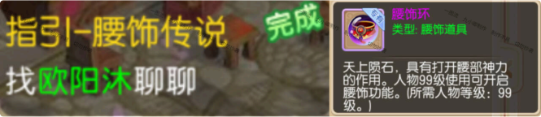
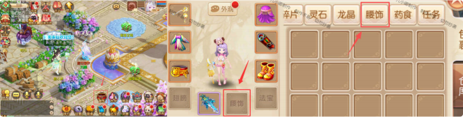
只有手拿武器的老款时装和门派原皮可以显⽰ 【腰饰】 外显 ，后续猫抓的时装不会显⽰ ，若不想显⽰外显直接取消这个选项的勾选即可
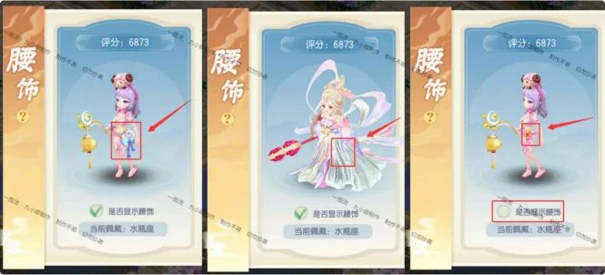
腰饰玩法由腰饰外显、腰饰环、腰饰羁绊三部分组成。不同的腰饰具有不同的属性加成。
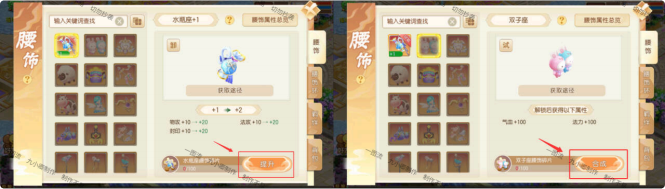
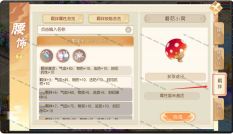
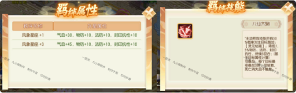
升级腰饰环需要消耗经验玉
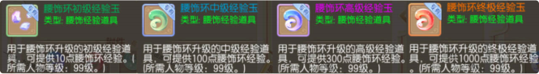
升阶腰饰环需要消耗各种珏璧(jué bì)
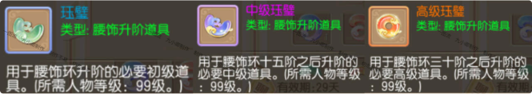
升级腰饰环的技能是随着级数阶数增多且共存
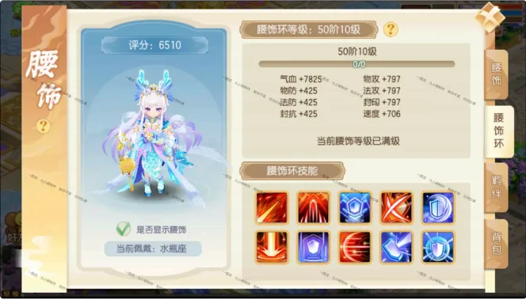
（这个上限取决于你的材料有多少 ，腰饰会自动升级（腰饰升星只会扣除对应碎
片不会扣除成品 ，在未激活的情况下会使用一个成品用于激活）腰饰环会自动升级 ，升阶。只要材料够还是非常方便的）
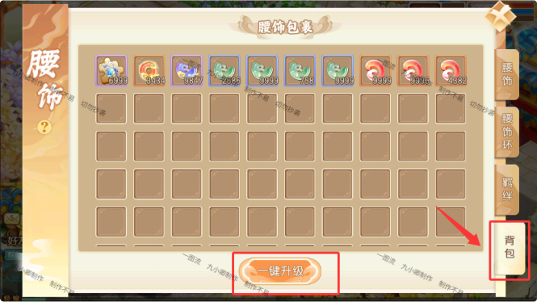
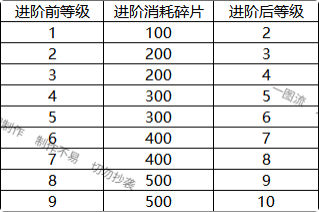
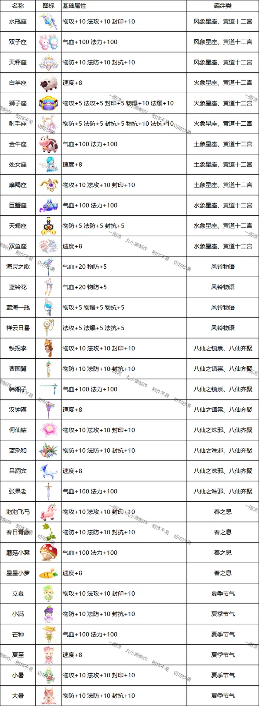
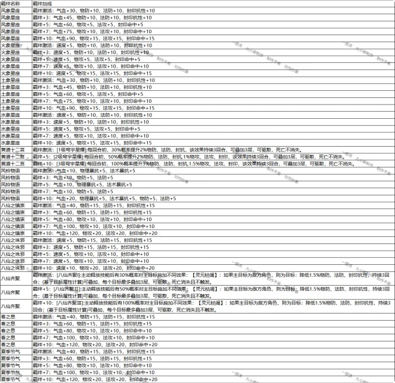
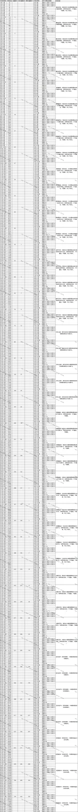